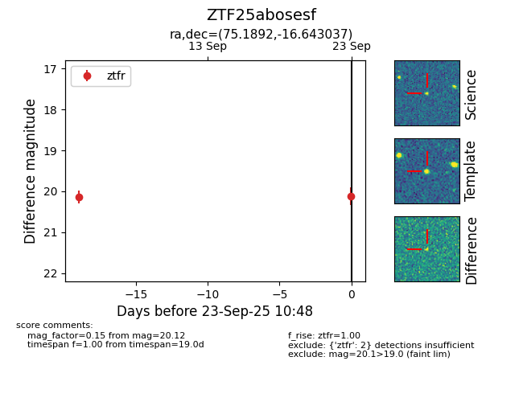

FINK: ZTF25abosesf
Lasair: ZTF25abosesf
ALeRCE: ZTF25abosesf
ZTF25abosesf (ztf,fink)
equatorial (ra, dec) = (75.1892,-16.64304)
galactic (l, b) = (216.4401,-31.77456)

last ztfr=20.12
2 ztfr detections